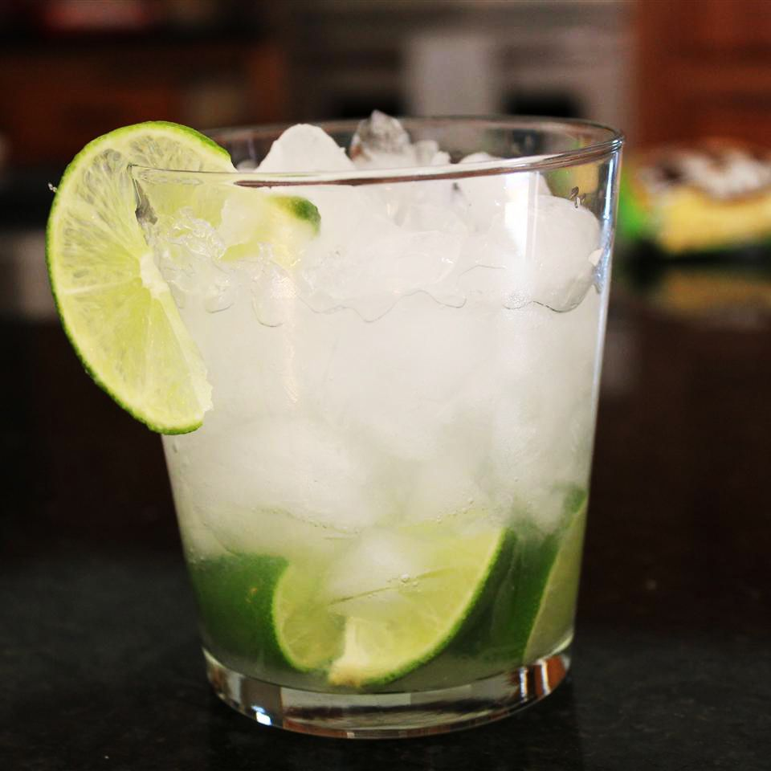

Caipirinha

Description
Caipirinha is Brazil's national cocktail. It's so refreshing and delicious! Ask your liquor store to order cachaça for you if they don't stock it — there's no substitute.
Ingredients
- ½ lime, quartered
- 1 teaspoon white sugar
- 2 ½ fluid ounces cachaça (Brazilian rum)
- 1 cup ice cubes
Steps
-
Squeeze and drop lime wedges into a large rocks glass. Add sugar and muddle until juices release.
-
Pour in cachaça and ice. Stir well.